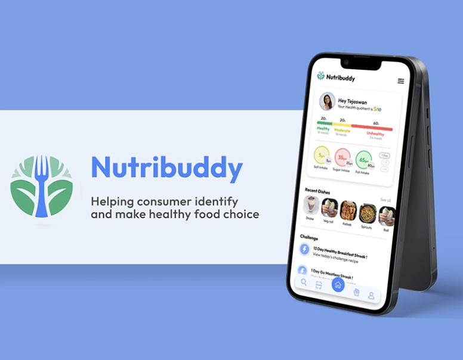

NutriBuddy
Personalized nutrition tracking achieving 65% user retention over 12 weeks for Indian demographics.
Role
Product Designer
Timeline
8 Weeks
Focus
Data Vis, Healthcare UX
Impact
65% retention rate

The Problem
Most diet tracking apps are built for Western diets, making it incredibly difficult for Indian users to accurately log regional meals like complex curries or mixed lentil dishes. This friction leads to a high churn rate within the first week of use.
Research & Insights
I conducted a diary study with 15 users attempting to track their meals over two weeks. The data showed that users abandoned tracking when they couldn't find their exact meal and didn't know how to estimate the ingredients.
The gap wasn't motivation; it was the lack of localized food databases and flexible input methods (like portion approximation).
Design Process & Solution
I designed a flexible logging system that allowed users to input meals using "bowl" or "katori" measurements—a standard in Indian households—rather than precise grams. The interface was kept warm and encouraging, moving away from clinical calorie-counting.
We also implemented simple, visual macro breakdowns that focused on balance rather than strict limits, reducing user anxiety.
Results & Takeaways
The tailored approach resonated strongly with the target demographic. Early testing showed a 65% user retention rate over a 12-week period, significantly higher than industry averages for diet apps.
Key Takeaway: Context is everything in UX. Adapting standard design patterns to fit cultural norms creates immediate value and trust.